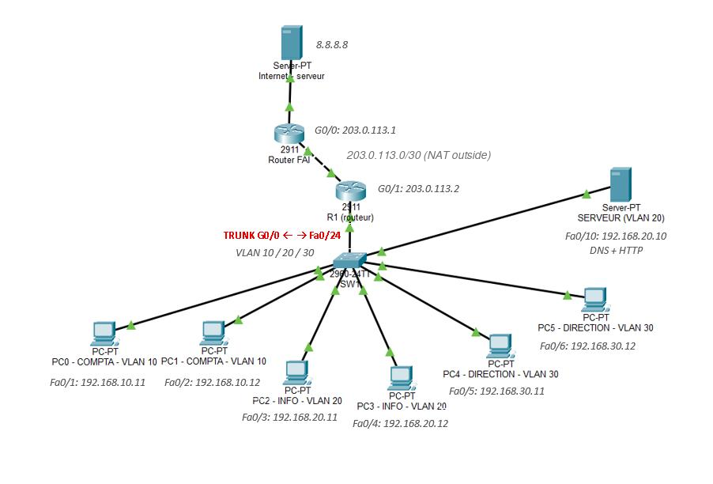
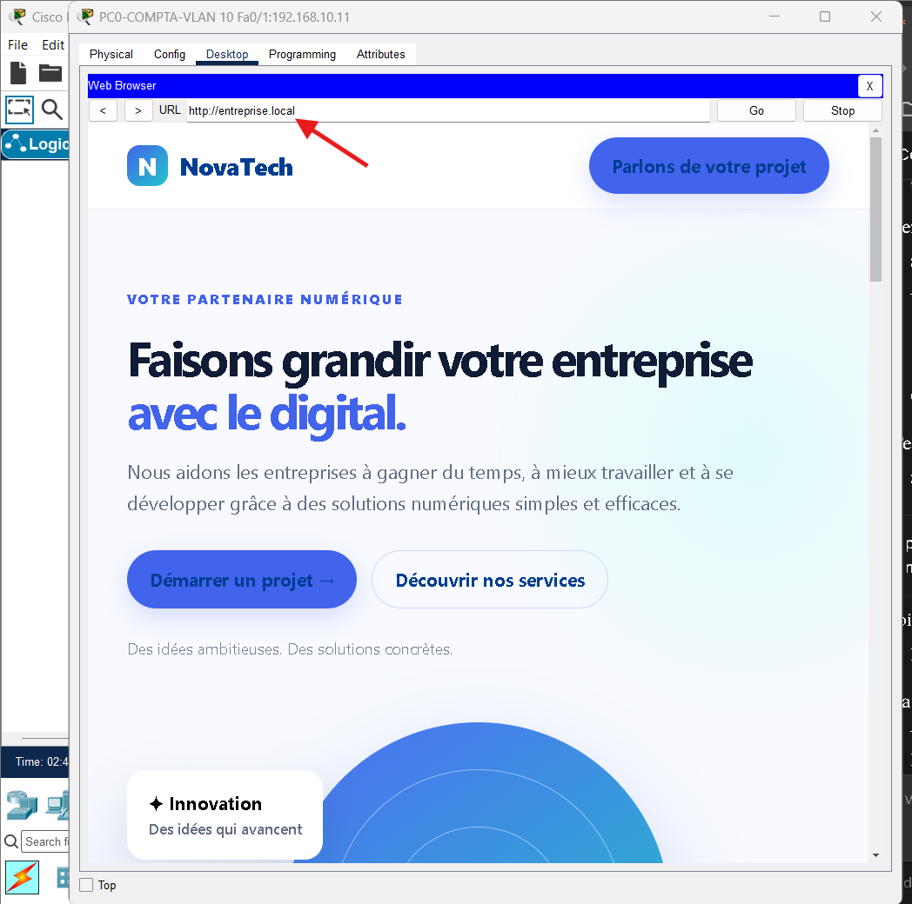

Terminé · 2026
Réseau d’entreprise : VLAN, NAT et ACL
Le réseau d’une petite entreprise avec trois services (Comptabilité, Informatique, Direction) séparés par des VLAN. Un routeur les relie, les postes reçoivent leur adresse automatiquement, un site web interne est accessible par son nom, et tout le monde accède à Internet. Une règle de sécurité empêche la Comptabilité d’accéder à la Direction.
- VLAN 10, 20 et 30, lien trunk 802.1Q entre le switch et le routeur
- Routage entre VLAN (router-on-a-stick)
- DHCP, DNS et serveur web interne
- NAT/PAT vers un Internet simulé
- ACL : Comptabilité bloquée vers Direction
- Tests validés : pings, navigateur, commandes show

